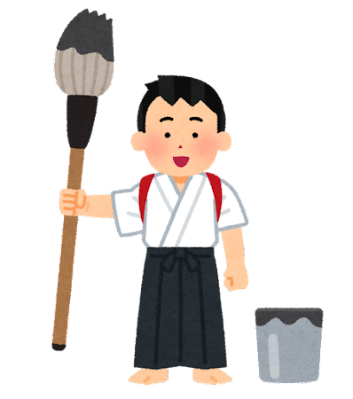

Kanji
Lista di alcuni dei caratteri per la certificazione JLPT N5
In questa pagina puoi trovare alcuni dei kanji più semplici che trovi nelle canzoni insieme alle loro traduzioni più comuni.
Sono tutti solitamente presenti nel livello di certificazione della lingua giapponese più semplice (JLPT N5).
Per impararli nel loro contesto d'uso, puoi cercarli direttamente dalle sigle!
Per studiare in maniera ancora più approfondita, invece, si consigliano i seguenti dizionari online:
